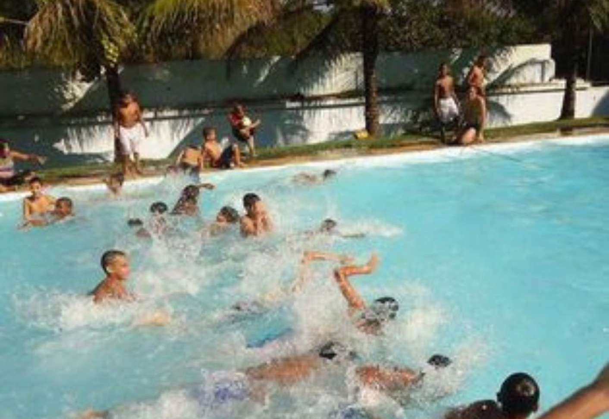
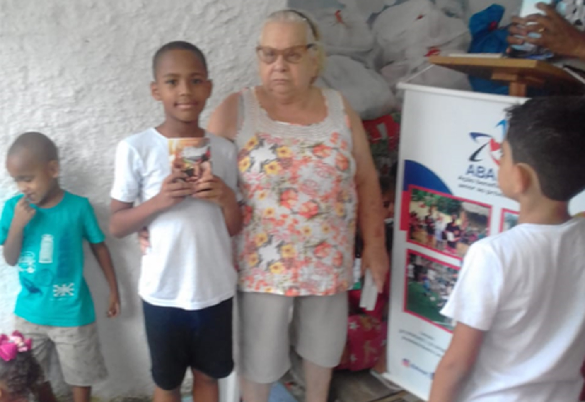

SOBRE O PROJETO
A ABAP (Ação Beneficente Amor ao Próximo) é uma organização não governamental dedicada a promover a melhoria da sociedade em várias frentes. Comprometida com o bem-estar coletivo, a ABRAP atua em diversas áreas, desde a assistência social às comunidades carentes até a promoção da educação e dos recursos básicos necessários para uma vida digna. Por meio de programas estruturados, a ABRAP proporciona alimentação para famílias em situação de vulnerabilidade, apoio educacional para crianças desfavorecidas, e organiza eventos esportivos que incentivam hábitos saudáveis entre os jovens. Além disso, a organização também se dedica a projetos de preservação ambiental, contribuindo para a sustentabilidade do planeta. Com um foco inclusivo, a ABRAP atende pessoas de todas as idades, desde jovens em fase escolar até idosos, visando sempre a melhoria da qualidade de vida da população. Por meio de sua atuação abrangente e comprometida, a ABRAP tem sido uma força positiva na transformação social, ajudando a construir um futuro mais justo e igualitário para todos.
CRIANÇAS
Nosso compromisso com as gerações futuras é absoluto. Buscamos incessantemente incentivá-las a construir um futuro melhor, promovendo acesso equitativo à educação e oferecendo suporte às crianças mais necessitadas.
 
APOIADORES
Se você é um empresario e tem interesse de contribuir com os projetos de nossa ONG, Entre em contato e venha nos ajudar a transformar a nossa sociedade em um lugar melhor para todos.
APOIE O PROJETO
O projeto impacta na vida de muitas pessoas em estado de carência so- cial. As pessoas do nosso projetos se dispõem a ajuda-los porem o projeto precisa de ajuda financeira para continuar beneficiando as pessoas necessitadas. Contamos com sua solidariedade para nos apoiar com qualquer valor disponível através dos meios disponíveis abaixo. (clique no icone do pix para copiar a chave pix do projeto)
Contribua com a nossa ONG! Clique no ícone abaixo para copiar a chave PIX e realizar sua doação.